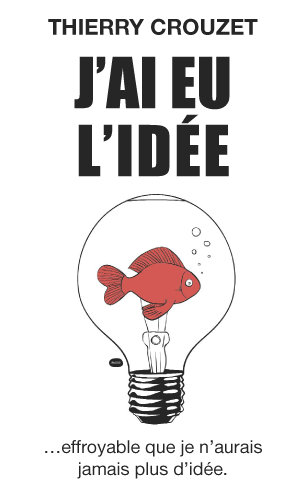
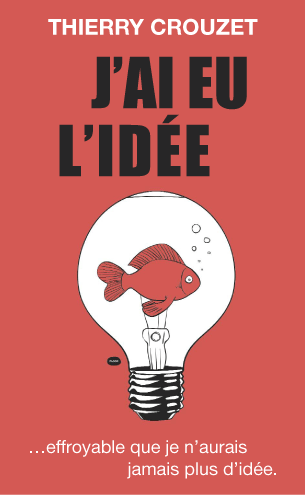
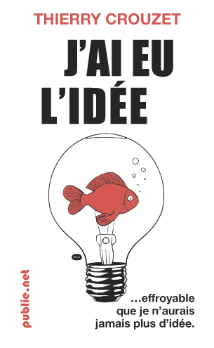
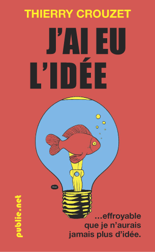

Choisissez une couverture II
Après que vous ayez préféré le poisson rouge parmi les choix proposés par Pacco, j'ai monté quelques couvertures avec l'image finale. Encore une fois vous pouvez donner votre avis, voire proposer vos propres variations. Je diffuse aussi ces images pour que Pacco me dise ce qu'il en pense.
Minimaliste

Typo désaxée, fond rouge

Sous-titre en habillage, fond rouge

Sous-titre en habillage, fond blanc

Tentative de coloriage

Suite | 2010 | Sommaire | Texte publié dimanche 26 septembre 2010